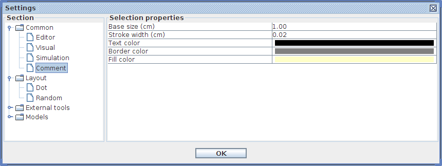
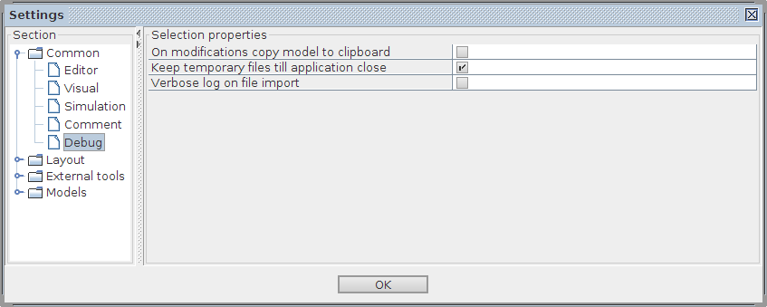
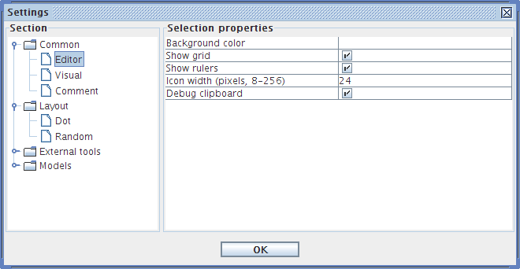
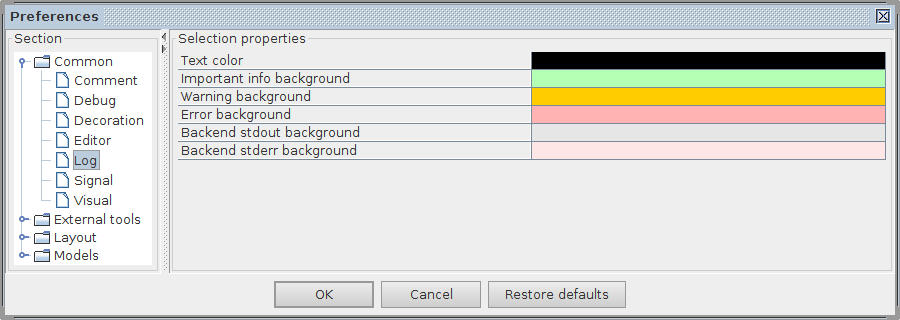
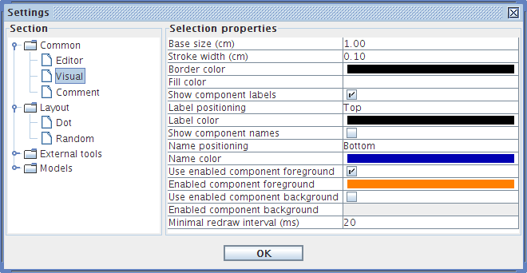

help:preferences-common
Common preferences
In Common section of the Preferences window you can specify the defaults for the settings that are common across all models.
Comment

- Base size (cm) – size of the empty comment field when first inserted in the graph editor. It is 1.00cm by default.
- Stroke width (cm) – width of the dashed line around the textual note. It is 0.02cm by default.
- Text alignment – alignment of the textual note. It is centered by default.
- Text color – color of the textual note font. It is black by default.
- Border color – color of the dashed line around the textual note. It is grey by default.
- Fill color – background color of the textual note. It is a tinge of light yellow by default.
Debug

- On modification copy model to clipboard – propagation of copied part of the graph from the local clipboard into the system clipboard as an XML text. The XML represents the mathematical and visual aspects of the copied sub-graph. By default this feature is switched off.
- Verbose log on file import – output of the detailed information about import from external file formats (e.g. Verilog and GenLib files).
- Log tracing information from parsers – output of the tokeniser and grammar analyser information when parsing external file formats.
- Log compatibility manager substitutions – output of the replacements made in order read work files that were saved in previous versions of Workcraft using a (slightly) different file format.
Decoration

- Highlighted component color – color of the components under mouse pointer; amber by default.
- Selected component color – color of the selected components; light blue by default.
- Shaded component color – color of the shaded component that are outside of the current group or page; grey by default.
- Excited component color – border color of the excited component in simulation; orange by default.
- Suggested component background – background color of the exited component that is suggested for the next simulation step; lime by default.
Editor

- Background color – the color of the editor canvas. Default background is white.
- Show grid – visibility of the adaptive grid in the editor panel. The grid is shown by default
- Use light grid – choice of dotted or lined grid. It is a light dotted grid by default.
- Grid color – color of the grid. It is light grey by default.
- Show rulers – visibility of the rulers on left and top edges of the editor panel. The rulers are hidden by default.
- Show hints - visibility of the textual hints from the currently selected tool at the bottom of the editor. The hints are displayed by default.
- Show issues – visibility of textual warnings issued by the currently selected tool at the bottom of the editor. The issues are displayed by default.
- Issue color – color of the issue text. Issues are red by default.
- Issue visibility interval (ms) – duration of issue text visibility. Issues are displayed for 2 seconds by default.
- Number of recent files (0-99) – number of recently opened files to show under File→Open recent menu. By default is 10 recent files are shown.
- Model title style – display style for the work name in the editor panel title. Three options are possible: minimal: Title, short: Title [MN], and long: Title - Model Name. Short display style is used by default.
- Show names as absolute path – show the full hierarchical name of nodes. By default this option is switched off.
- Open non-visual models (imported or transformed) – automatically open and layout non-visual models (e.g. imported from .g file or the results of transformations with external tools) in the editor. By default this feature is switched on.
- Minimal redraw interval (ms) – time interval between subsequent redraws of the editor panel. By default the editor is redrawn not more often than every 20ms.
Log

- Text color – color of the normal message text. It is black by default.
- Important info background – background color of the information text. It is light green by default.
- Warning background – background color of the warning text. It is amber by default.
- Error background – background color of the error text. It is pink by default.
- Backend stdout background – background color of the stdout output from backend tools. It is light grey by default.
- Backend stderr background – background color of the stderr output from backend tools. It is light pink by default.
Signal

- Input signal color – color of the input signal nodes, dark red by default.
- Output signal color – color of the output signal nodes, dark blue by default.
- Internal signal color – color of the internal signal nodes, dark green by default.
- Dummy color – color of the dummy nodes, black by default.
- Show signal toggle (~) – visibility of tilde symbol at the end of a toggle event. If is off by default.
Visual

- Base font size (point) - requires restart – size of the font that also influences the scaling of all the GUI elements (buttons, menu, dialogs, etc). It is 10 points by default.
- Node size (cm) – size of the nodes. It is 1.00 by default.
- Stroke width (cm) – width of the node outlines. It is 0.10 by default
- Border color – color of the nodes outline. Default is black.
- Fill color – background color of the nodes. Default is white.
- Pivot size (cm) – size of the pivot marker of composed objects (e.g. pages and groups). It is 0.10 by default.
- Pivot stroke width (cm) – line width of the pivot marker. It is 0.02 by default
- Line spacing in multi-line text (ratio) – proportion of the vertical separation between the lines to the height of the largest characters. It is 0.30 by default.
- Show labels – visibility of the textual labels associated with the nodes. The labels are visible by default.
- Label position – predefined label position for newly created nodes. The labels are positioned above the nodes by default.
- Label color – font color for the labels of newly created nodes. The labels are black by default.
- Show names – visibility of the unique IDs of the nodes. The IDs are visible by default.
- Name position – predefined position for IDs of newly created nodes. The IDs are positioned below the nodes by default.
- Name color – font color for the IDs of newly created nodes. The IDs are blue by default.
- Connection line width (cm) – line width of the connections. Default is 0.02.
- Connection arrow width (cm) – arrow width of the connections. Default is 0.15.
- Connection arrow length (cm) – arrow length of the connections. Default is 0.40.
- Connection bubble size (cm) – bubble size of the connections. Default is 0.20.
- Connection color – color of the connections. Default is black.
- In Boolean expressions render text after '_' as subscript – interpret the underscore symbol as the beginning of subscript, or as a normal symbol. Underscore is a normal symbol by default.